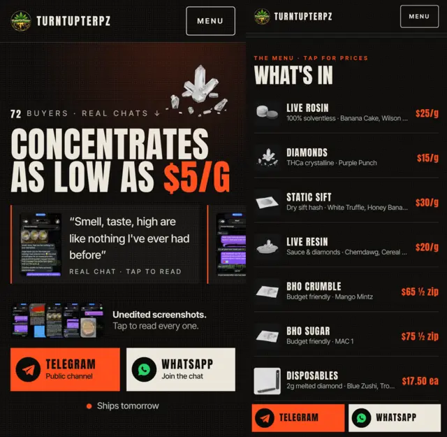
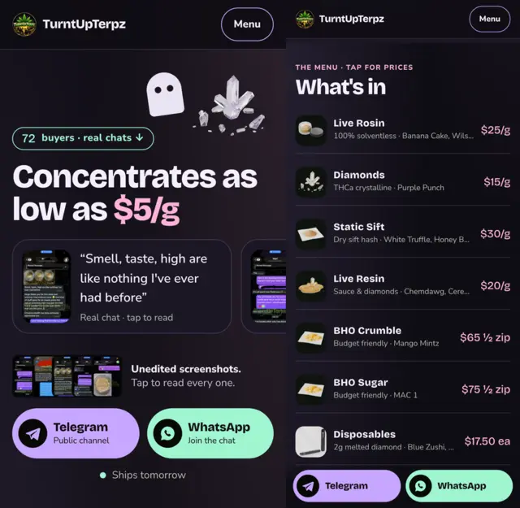
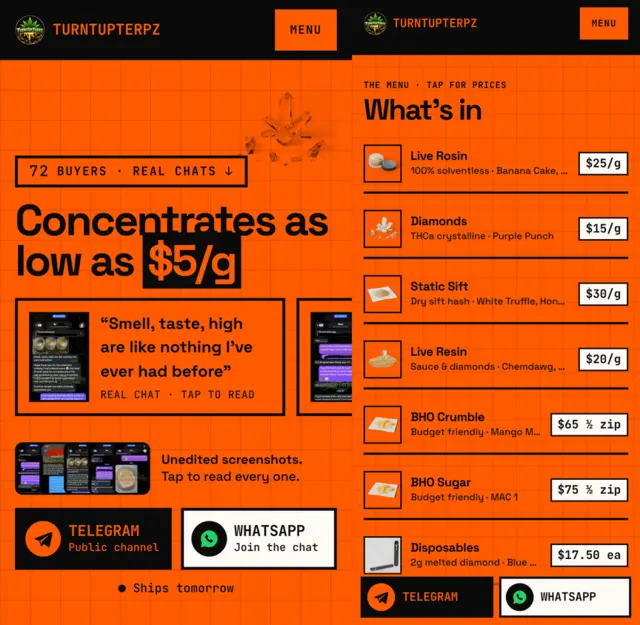
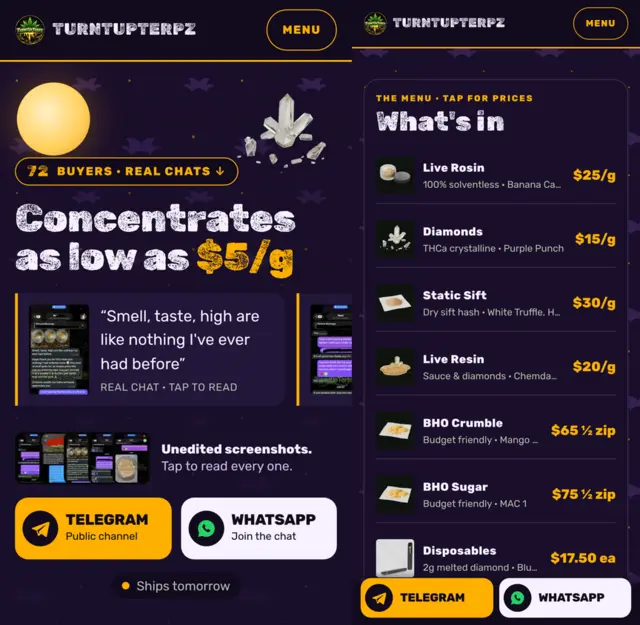
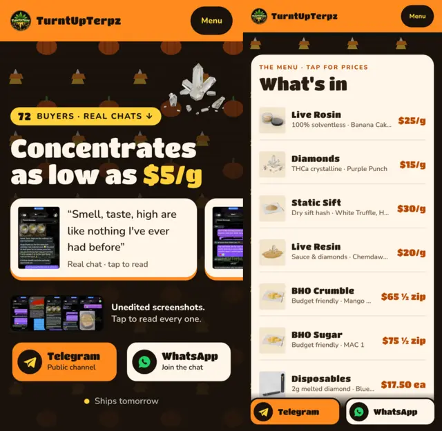

Night Shift, Halloween edition
Five Halloween takes on your live Night Shift homepage: three contemporary, two with patterned backgrounds. Same layout and approved ideas, same iPhone fixes (thumb-zone buttons, first screen fits an iPhone SE, 44pt taps). Previews show iPhone SE and iPhone 15.
The drafts

A modern indie-horror poster: off-black and bone, tall condensed caps, one blood-orange accent, film grain. Nothing cute.
Open Spooky 1 →
The soft-spooky TikTok look: black with lavender, bubblegum pink and mint, rounded everything, a little ghost by the headline.
Open Spooky 2 →
Gen-Z web brutalism in Halloween orange: flat color, thick black rules, a visible grid, square corners, no glow.
Open Spooky 3 →
Tiled bats and stars on deep purple with a harvest moon. Every section sits on a solid panel so the pattern never gets in the way of reading.
Open Spooky 4 →
Tiled candy corn and pumpkins on chocolate brown, with sections on cream cards like a treat bag.
Open Spooky 5 →Tested at iPhone SE, 15 and Pro Max sizes: everything fits, nothing runs off the screen, the button bar works, every tap target is 44pt or bigger, no errors, all text passes WCAG contrast. All drafts · Live site